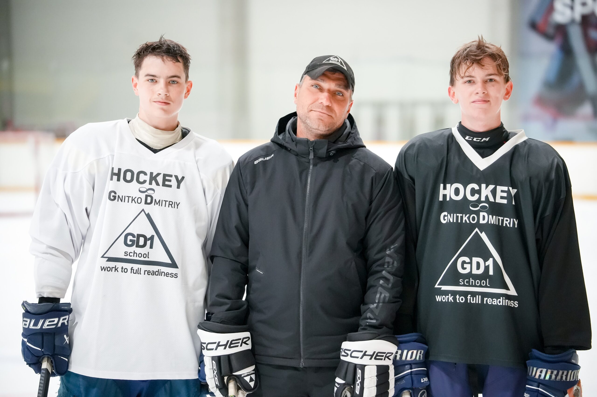

РОЗВИТОК ГРАВЦІВ · КЕМПИ ПРОТЯГОМ РОКУ
Працюй заради
нового рівня.
Кемпи з техніки катання, що допомагають краще контролювати ребра ковзанів, швидше прискорюватися й упевненіше виконувати кожен рух.
ПРАЦЮЄМО ДО ПОВНОЇ ГОТОВНОСТІ
ВІД СПІЛЬНОТИ GD1
Прогрес, який
відчуваєш.
Гравці та їхні родини розповідають, як цілеспрямовані тренування на кемпах допомагають у грі.
«Чудовий кемп! Щиро рекомендую Дмитра - професійного тренера, який справді розвиває дітей. Ми обов’язково плануємо повернутися. Для мого сина це був неймовірний досвід».
«Мені дуже подобаються цей кемп і його вправи. Це чудова можливість удосконалити катання як для юних, так і для професійних гравців. Щиро рекомендую!»
«Дуже рекомендую дітям проводити літо на таких кемпах, які організовує Дмитро. Це неймовірна можливість для зростання та розвитку!»
«Це не просто черговий хокейний кемп, а досвід, який змінює підхід до гри. Щиро рекомендую всім, хто прагне перейти на новий рівень!»

ТРЕНЕР І УЧАСНИКИ КЕМПУ
Працюй заради
нових цілей.
Тренер Дмитро з двома гравцями, які брали участь у кемпі GD1.